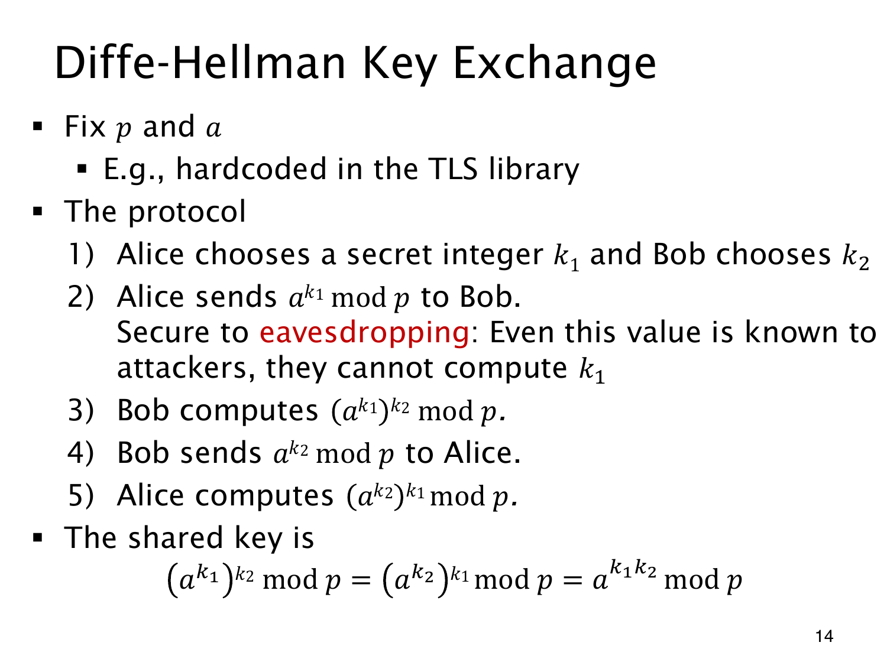

L1.14 · 第 14 页讲解原文
查看这一页课件

公开交换幂值，私下保留指数
双方先公开约定合适的素数 p 和底数 a。Alice 私选 k1，计算并发送 A=ak1modp；Bob 私选 k2，计算并发送 B=ak2modp。私密指数本身不发送。
Bob 收到 A 后算 Ak2modp，Alice 收到 B 后算 Bk1modp。模幂规则给出相同结果：
K=ak1k2modp=ak2k1modp.
取小参数 p=23,a=5,k1=6,k2=15，可验得 A=8,B=19，双方均算得 K=2。这只为演示计算，小参数没有实际保密能力。
窃听者知道 p,a,A,B，但不知道指数。若能解离散对数，便能恢复指数和共享值；不过未知指数本身并未排除其他求 K 的办法。原页“不能计算”应理解为合适参数与相应困难性假设下的计算困难。
这个协议描述的是被动窃听情形，尚未核验对方身份。主动替换消息需要认证机制来应对；实际系统通常也还会对共享值作密钥派生。